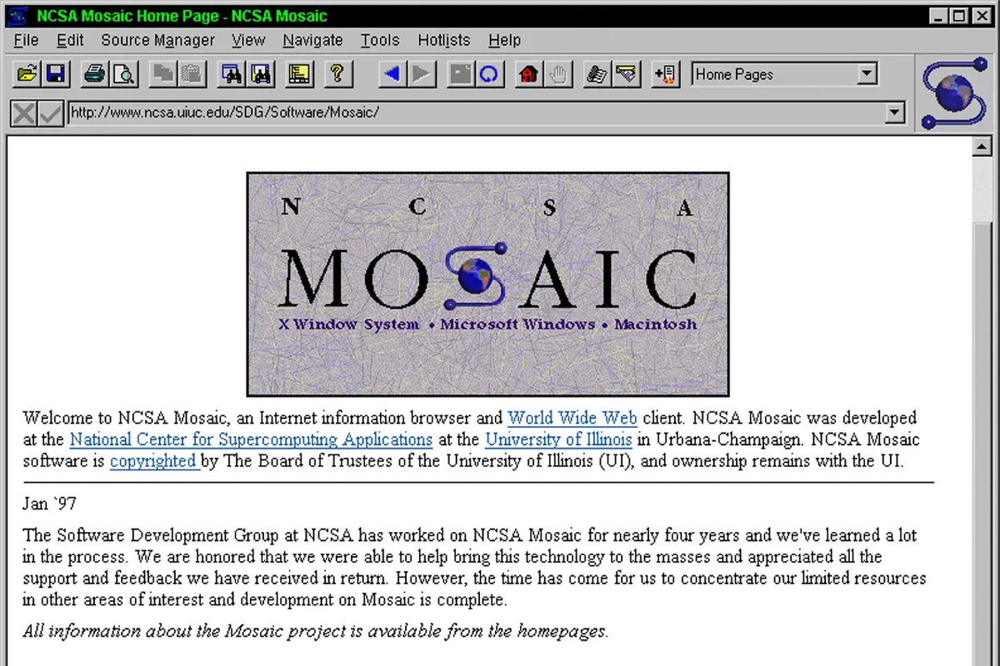
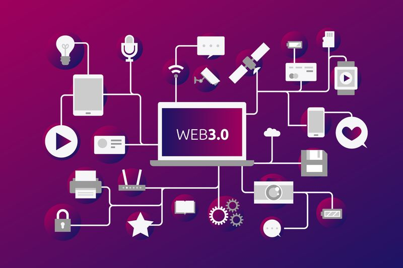

Linea del tiempo
Programación WEB
Inicio de la WEB 1.0
Nace la web comenzando con solo textos e imagenes. La WEB 1.0 es de solo lectura.

HTML
Se define el HTML y se crea el primer navegador WEB

Se crea la WWW
Tim Barners crea la Word Wide Web (WWW) propuso un nuevo sistema de hipertexto

Netscape
Navegador creado por Marc Andreessen permitia incluir imagenes en las paginas WEB
MOSAIC
Netscape lanza su primera version de navegador comercial para internet

WEB 2.0
Permite a sus usaurios interactuar con otros y cambiar contenido del sitio web

W3C
Creo grupos de trabajo dedicados al desarrollo de la WEB Semantica

WEB 2.0
Permite a los usuarios interactuar y colaborar entre si como creadores de contenido generado por usuarios
WEB 3.0
Transformación de la red en una base de datos e inclusión de contenido semantico

Evolución WEB 3.0
Utilización de "Data WEB" inteligencia artificiales, la web semántica y su evolución al uso de ambientes 3D

Integrantes:
Joshua David Sanchez Maza
Referencias:
Historia del WWW: de la web 1.0 a la web 3.0. (2014b, junio 27). Páginas web, diseño gráfico y marketing digital en Guadalajara | Hazhistoria. https://www.hazhistoria.net/blog/historia-del-www-de-la-web-10-la-web-30
Evolucion Web 1.0 - 2.0 - 3.0 - 4.0. (n.d.). Evolucion Web 1.0 - 2.0 - 3.0 - 4.0 - Herramientas Informaticas Nivel 2. Google Sites. Retrieved October 24, 2022, from https://sites.google.com/site/elrendimientoscolar/evolucion-de-la-web/web-1-0-2-0-3-0-4-0
Luna, J. M. (2015, August 19). Las TIC y la educación. La web 2.0. Inercia Digital. Retrieved October 24, 2022, from https://blog.inerciadigital.com/2015/08/19/las-tic-y-la-educacion-la-web-2-0/
SCSWINTER. (2010, December 12). Historia de la Web 2.0 – Historia de la Informática. Historia de la Informática. Retrieved October 24, 2022, from https://histinf.blogs.upv.es/2010/12/12/historia-de-la-web-2-0/
WEBEDIA BRAND SERVICES. (2017, September 25). Web 4.0: así es la Internet que viene (¿con spoilers?). Xataka. Retrieved October 24, 2022, from https://www.xataka.com/territoriolowi/web-4-0-asi-es-la-internet-que-viene-con-spoilers